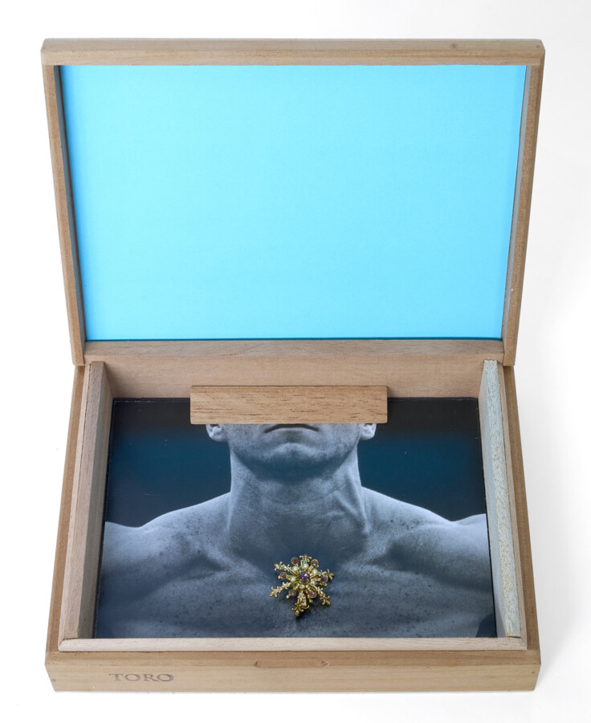

Wallace Bowling: Ensemble
Wallace Bowling’s “constructs” are three dimensional, interactive artworks that juxtapose natural materials and cultural touchstones with sensual innuendo. Using mostly found objects and printed matter, Bowling, who was trained as an architect, crafts objects into structures which influence perception and invite gentle participation.